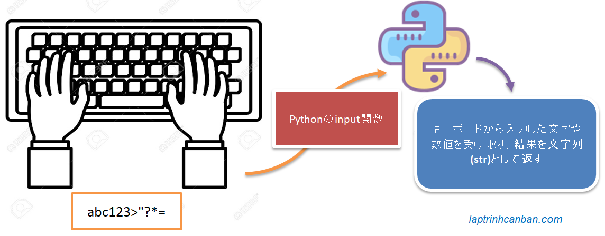
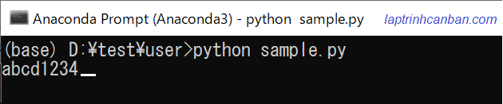
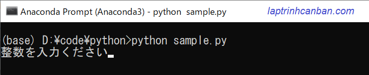
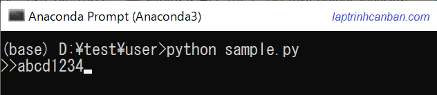

記事掲載：https://laptrinhcanban.com/ja
Pythonの標準入出力のトピックの最初の記事で、標準入力のinput関数によるデータ入力方法について説明します。記事を通じて、Python2のraw_input関数やPython3のinput関数など各バージョンにおける入力関数の使い方やinput関数によるキーボードからデータ入力方法などを学びましょう。
Python2およびPython3バージョンのPythonには、次のタイプの入力関数があります。
- Python2のraw_input関数とinput関数
- Python3のinput関数
その中、Python3のinput関数には特に注意を払う必要があります。
Python2およびPython3のデータ入力関数
Python2では、Pythonにデータを入力するために、raw_input()**とinput()**の2つの関数を使用できます。ただし、Python3では、入力関数が作り直され、Python2の古いinput関数が削除され、Python2のraw_input関数が同等の機能を持つPython3のinput関数に名前が変更されました。
Python2のraw_input関数とPython3のinput関数
Python2のraw_input関数とPython3のinput関数は同じ関数があり、文字列型のstring（str）としてキーボードからPythonへの入力を受け取ります。
Python2のinput関数
Python2のinput()関数には、上記の2つの関数と同じ機能があります。ただし、Python2の入力関数には、キーボードから入力された文字列を評価する関数もあります。
たとえば、Python2でinput関数を使って1 + 2をキーボードから入力した場合、プログラムは入力したデータを文字列として直接受け取るのではな1 + 2の加算結果を受け取ります。
ただし、一部の処理の問題により、この評価機能はPython3の標準入力から削除されました。
### Pythonでのinputとraw_inputの違い
Python2でのみ比較する場合、上記の2つの関数の違いはPython2のinput関数に入力される文字列の評価機能があるのに対し、Python2のraw_input関数にこの機能がないという点です。
ただし、Python2のraw_input関数とPython3のinput関数で比較する場合には、これら2つの関数が完全に類似していることが分かります。
Pythonのinput関数
Python3の人気により、この記事を含めてトピック「初心者向けPythonの自習」の知識共有記事では、Python3のinput関数をinput関数として呼び出し、Pythonでのデフォルトの入力関数として扱います。この関数については、以下で詳しく説明します。
Pythonのinput関数とは
Pythonのinput関数とは、Pythonの標準入力の組み込み関数であり、キーボードから入力した文字や数値を受け取り、結果を文字列(str)として返すための関数です。

input関数の使い方
Pythonでinput関数を次の構文で使用します。
input ( prompt )
ここでの promptとはinput関数の唯一の引数です. これは、入力に関する指示またはヒントを与える文字列です。promptを自由に書くことも、この引数を省略することもできます。
たとえば、Pythonでinput関数を使用して次のように記述しても問題ありません。
- promtpを省略するデータ入力画面：
input()

promtpを介してデータ入力に関する指示またはヒントを与える:
input("整数を入力ください") |
データ入力画面：

入力待機通知文字を追加し、promtpを介して入力画面を美化する:
input(">>") |
データ入力画面：

input関数を使用するときにpromtp引数に文字列を指定すると、入力を待機している間、その文字列が表示されます。promtp引数をを省略すると画面に何も表示されず、入力を待っているかどうかがわかりません。したがって、Kiyoshiは、関数でプロンプト引数を指定してinput関数を使用することをお勧めします。
input関数は、キーボードから入力したデータを受け取り、その入力したデータを含むstring（str）を返します。
この結果を変数に割り当てて、プログラムで使用できます。たとえば、次のように画面に入力したデータを画面に出力します。
data = input("データを入力ください：") |
input関数を使用してキーボードからPythonに入力されたすべてのデータ型は、string（str）として返されることに注意してください。そのため、キーボードからPythonに数値を入力しても、その数値は文字列としてのみ受信されます。以下に示すように、type関数によって受信された結果のデータ型を確認できます。
data = input("データを入力ください：") |
上記のように、キーボードから入力された数値の123が文字列(<class 'str'>)としてPythonによって受信されたことが分かります。
Pythonのinput関数による高度なデータ入力方法
上記では、input関数を使用してPythonでデータを入力する最も基本的な使い方について説明しました。
実際、Pythonでinput関数を使用する場合、他の関数やメソッドと組み合わせることで、input関数をよりシンプルでスマート且つ高度な使用方法が無数にあります。以下では、Pythonでinput関数を使用するいくつかの高度な手法を紹介します。
1行で複数データを入力する方法
Pythonの文字列分割のsplitメソッドと組み合わせることで、1つの入力行で同時に複数のデータをPythonに入力できます。
スペースで区切ってすべてのデータを1行で入力します。入力したデータをsplitメソッドで区切って、次のように結果をリストとして保存することにより、1行で複数のデータを同時にPythonに入力する事ができます。
s = input(">>").split() |
データ入力画面は次のようになります
>> 1 23 ab |
- 参照: Pythonで文字列を分割.
複数行のデータを入力する方法
リスト内包表記と組み合わせて使用することにより、次のように複数行のデータをPythonに入力できます。
s = [input(">>") for i in range(3)] |
データ入力画面は次のようになります。
>> 1 |
応用例で、Pythonキーボードから次のようにn個の整数を入力できます。
n = 5 |
データ入力画面は次のようになります。
>> 1 |
- 参照: Pythonのrange関数。.
- 参照: Pythonでのリスト内包表記の使用.
データの入力回数指定
リスト内包関数を適用する方法と同様に、データを入力する回数を指定してから入力を開始することもできます。
n = int(input("n=")) |
データ入力画面は次のようになります。
n=4 |
また、異なるデータ型をPythonに入力する場合、それぞれの適用な方法もあります。以下の記事の詳細を参照してください。
- 参照: Pythonで数字を入力
- 参照: Pythonでの文字列とリストの入力
まとめ
上記 Kiyoshi はPythonのinput関数によるデータ入力方法について説明しました。レッスンの内容をよりよく理解するために、各例文を練習をしてください。
そして、次のレッスンでPythonの知識についてもっと学びましょう。
URL Link
ホーム › 初心者向けのpython学習>>04. pythonの標準入出力